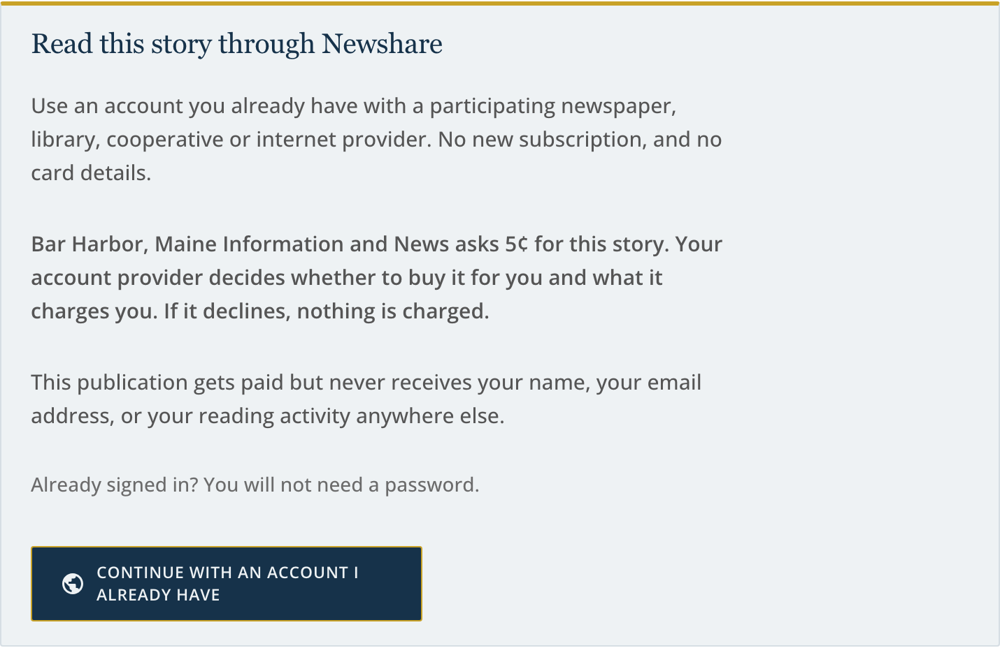
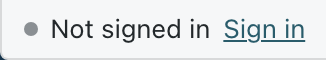
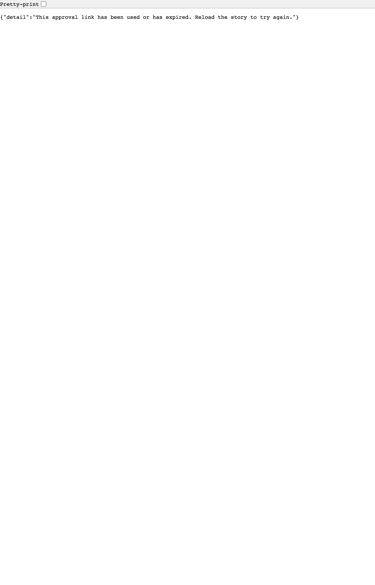
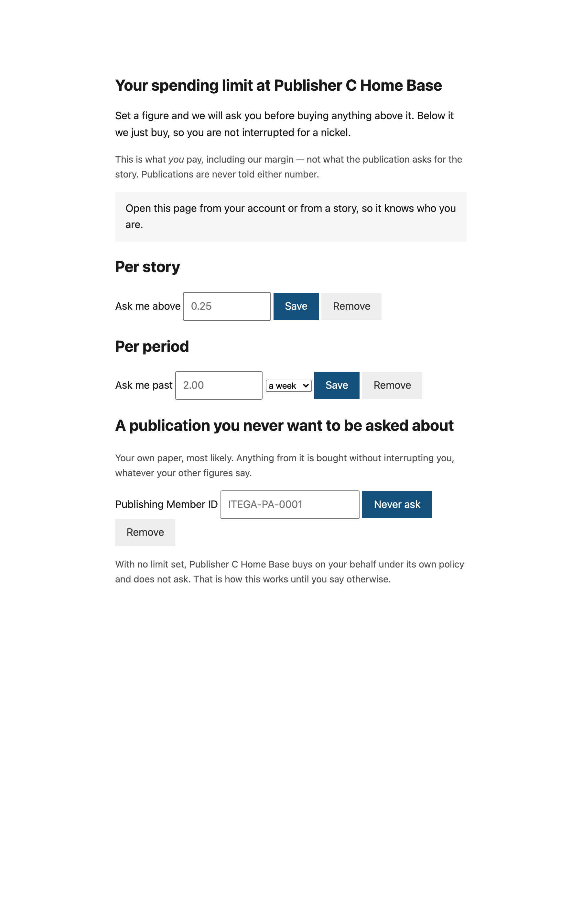

Newshare lets you read a story at one publication using an account you hold with another. These are the screens you may meet, what each one is telling you, and — because it is rarely obvious — which organisation is talking to you.

The price named here is what the publication asks for the story. It is not necessarily what you pay: your own provider adds its margin, and this publication is never told what that margin is — so it cannot tell you your price, and does not pretend to.
The button both signs you in and, if your provider agrees, buys the story. That is said before you press it rather than after, because it commits money.
You are never revealed by continuing. The publication receives an opaque identifier that is different at every publication, so two newspapers cannot work out between them that you are the same person.

It exists because reading several stories without being stopped looks exactly like a broken paywall. When you are signed in it shows the identifier that publication knows you by — which is not your name, and is not the one any other publication sees.
If you have set a spending limit, anything above it waits for you. The screen that asks comes from your provider, not the publication, because it names the price you will actually pay — the figure the publication does not have.
Approving covers that one story at that one price, for a few minutes. It does not raise your limit, and the next story above it asks again.

Two different things can go wrong, and they are deliberately two different screens.
Your account did not authorise this purchase. Your provider was asked and declined — usually a price above what you or they allow. Nothing was charged. The decision is theirs, so the screen sends you to them.
We could not reach your account provider. Nobody decided anything; the network failed to ask. Nothing was charged, the fault is ours rather than yours or theirs, and trying again shortly is the remedy.

Per story. Anything dearer than your figure asks you first.
Per period. A ceiling on a day, a week or a month. The page shows how much of it you have used.
Per publication. Somewhere you never want to be asked about — your own local paper, most likely. Anything from it is bought without interrupting you.
With no limit set, your provider buys on your behalf under its own policy and does not ask. That is how it works until you say otherwise.
You are asked how far you mean it. Sign out here leaves you recognised everywhere else in the network. Sign out everywhere ends the session at your provider too — the one that matters on a shared or library machine.
Two screens live in your own WordPress admin, under Settings.
Newshare Network — what the plugin is doing on your site. It needs no keys and no configuration: it certified itself when you activated it, by proving it controls your domain.
Newshare Earnings — what the network owes you, over 7, 30 or 90 days, grouped by which organisation each reader has their account with. These are wholesale figures: what you asked and are owed. What each reader paid includes their provider's margin, which is between them and it.
No individual reader appears in those totals and none can. Your site receives a different opaque identifier for each reader at each publication, so there is nobody there to name.